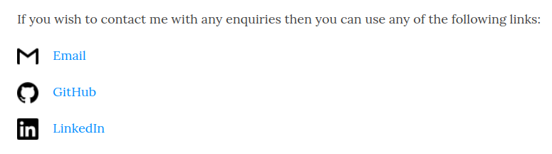
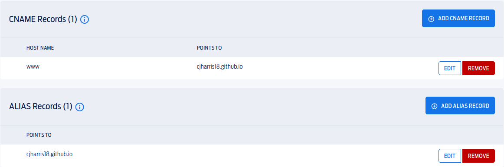
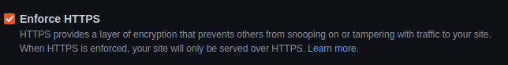

Given you are seeing this post, it means that I have been successful in creating my blog. However, I wanted to go further into how this came about, the decisions I made, issues I encountered and generally overall how I found this experience. The aim of this post is not to provide a tutorial, but to provide an experience piece on how I found these tools.
I decided to build a blog in the first place simply to learn new skills. I had dabbled in a lot of this already, but had only really touched the surface, or experimented in simulated enviroments. So I decided to build my own blog, to further my skills.
Why Hugo
Firstly, I shall address the decision to use Hugo. For those unfamiliar, Hugo is a framework designed for building static sites with speed and ease. For a while, I considered building the site from scratch using web languages, however, this did not suit my needs. I did not want to faff around with configuring HTML and CSS everytime I wanted to make a blog post. By using Hugo, I could write these in markdown and convert them into the HTML and CSS automatically.
It is worth noting, that Jekyll is another alternative for this. The reason I chose Hugo however was the speed at which it could build a site. This may not be a massive issue for a small blog, however, further down the line, this will become increasingly important.
Creating a site with Hugo was, for the main part, relatively simple. A lot of the decision making from here on out was deciding on a specific Hugo theme. I found myself building quick mockups with several templates before eventually deciding on Beautiful Hugo.
Building the Site
Now that I had decided on a framework for building the site, along with a theme, I was ready to start the bulk of the work. For the most part, Hugo made this relatively easy. More on that later.
With hugo, the large majority of the config is done for you:
hugo new site blog
git init
git submodule add https://github.com/halogenica/beautifulhugo.git themes/beautifulhugo
The above commands do the majority of the work for me, from here, a config.toml file will address most of the config. I found that for what I wanted, I could quite easily modify most of this using the TOML, however, there was of course issues. The nature of a template meant that it would not perfectly suit my needs, so I had a few minor issues that I had to resolve. Remember to add a .gitignore file for the public/ directory, as this is where hugo builds the site to.
Some of the Issues I Faced
I found that there was a lot of custom config that I had to do in order to get the site how I wanted. Firstly, it’s important to NOT modify the theme files themselves, instead copy them to the relevant folders, a quick tree here shows which files I had modified. It is worth noting that I found where to edit these files mainly through the use of commands such as grep and find.
$ tree
├── layouts
│ └── partials
│ ├── footer.html
│ └── head.html
└── static
├── css
│ └── override-template.css
└── images
├── avatar.jpg
├── email.png
├── favicon.ico
├── github.png
└── linkedin.png
I have not included all of the files you would find, just the ones that provide relevance to this specfic issue. You can see my custom files, so I will go into some of the issues these fix. Note this list is not exhaustive, just a few of the highlights:
Tab Headings
When I had the site at its default configuration, the tab headings would be Page - Chris Harris. The code in the config for this is:
{{- with ($.Scratch.Get "Title") }}
<title>{{ . }} - {{ $.Site.Title }}</title>
{{- end }}
As we can see, it pulls the name of the page and then the site title, so what is the issue?
Well, the config in config.toml meant that we had the main page named Chris Harris, so that it could be clicked in the top left of the site. This meant that the home page would display Chris Harris - Chris Harris. I modified this using an if statement.
{{- with ($.Scratch.Get "Title") }}
{{ if $.IsHome}}
<title> Home | {{ $.Site.Title }}</title>
{{ else }}
<title>{{ . }} | {{ $.Site.Title }}</title>
{{ end }}
By utilising the $.IsHome variable, we were able to simply manually change the tab heading. I had a similar issue for the headings for Tags. I modified this in a similar way:
$ diff layouts/partials/head.html themes/beautifulhugo/layouts/partials/head.html
< {{- $title := $.Title }}
---
> {{- $title := printf "Overview of all pages with the %s #%s" .Data.Singular $.Title }}
The Footer
This issue was more minor, before it simply said: Chris Harris . Copyright Stuff . Chris Harris. I did not see the need for my name twice, so I simply removed the following lines from footer.html.
{{ if .Site.Title }}
•
<a href="{{ "" | absLangURL }}">{{ .Site.Title }}</a>
{{ end }}
Image Lock
I found that Hugo would generate all the images and lock them in the center of the page, likely because it wanted to center images for blog posts. However, for my contact page, I did not want this:

Above is an example of how the current contact page looks (at the time of writing). To do this, I had to add some Custom CSS. The first step here was to add the following line to config.toml:
custom_css = ["css/override-template.css"]
The contents of the CSS file itself were quite simple too:
img[src$='#contactImg']
{
float:left;
width: 30px;
height: 30px;
margin-right: 20px;
}
These configuration options allowed me to simply add #contactImg to my images, in order to set them to achieve what I desired.
TOML Permalinks
This was less of an issue and more of a preference, I simply wanted blog posts to be referred to as cjharris.co.uk/post-name as opposed to cjharris.co.uk/post/post-name. To do this, I simply added the following to my config.toml:
[permalinks]
post = "/:filename"
GitHub Pages
Now that I was happy enough with my site, it became time to host it using GitHub pages. Going into this, I had never used GitHub Pages, as my messy git log might suggest. To generate my site, it is as simple as running hugo to generate the site into the public/ directory. This is what should be placed in the Git Repository you want to serve up using GitHub Pages. The actual hosting is relatively simple, you just need to specify the branch, in this case I simply chose main as that made the most sense. Now, my site was live, I could find it at cjharris18.github.io/personal-blog/. I had a live blog.
I then tested all my features, one issue that I ran into was that my .well-known directory was not served, however, through hosting it locally, it would work. The GitHub pages fix here was simple, create a file called _config.yml with the following content:
include: [".well-known"]
However, this was not an issue that I had forseen the need to address.
Custom Domain
I had my site live, but let’s face it, a .github.io domain simply doesn’t cut it. So I purchased myself the cjharris.co.uk domain. Getting this to work with GitHub Pages was a bit more difficult than expected. For further info, see the official doccumentation. I will however, highlight some of the basics, as I found this quite interesting.
Firstly, you need to tell GitHub pages where you now want to serve your site:
This is as simple as shown above, from there, GitHub Pages will attempt to deploy your site at the specified domain. An important thing to note here, GitHub Pages only attempts to deploy the site when it detects a new commit to the repo.
So now, you need to add a few DNS settings for your DNS provider. You will first need to tell them how to communicate with GitHub Pages, this is done by adding A and AAAA records.
A Records:
185.199.108.153
185.199.109.153
185.199.110.153
185.199.111.153
AAAA Records:
2606:50c0:8000::153
2606:50c0:8001::153
2606:50c0:8002::153
2606:50c0:8003::153
Once this is done, you will see the error change on your GitHub Pages site, showing it has detected something. The best way however to test this is by using the dig command:
$ dig cjharris.co.uk +noall +answer -t A
cjharris.co.uk. 3600 IN A 185.199.108.153
cjharris.co.uk. 3600 IN A 185.199.110.153
cjharris.co.uk. 3600 IN A 185.199.111.153
cjharris.co.uk. 3600 IN A 185.199.109.153
$ dig cjharris.co.uk +noall +answer -t AAAA
cjharris.co.uk. 3584 IN AAAA 2606:50c0:8003::153
cjharris.co.uk. 3584 IN AAAA 2606:50c0:8002::153
cjharris.co.uk. 3584 IN AAAA 2606:50c0:8001::153
cjharris.co.uk. 3584 IN AAAA 2606:50c0:8000::153
As can now be seen, the records can be found. However, this is not all. Now we need to configure ALIAS and CNAME records, luckily these are also quite straight forward:

And it is as simple as that, bear in mind however, that these records can take up to 24 hours to update. Personally, I thought I had issues with my configuration here for ages, only to find that I was simply not patient enough.
And now we have a site served at http://cjharris.co.uk. Just as we wanted.
Verifying the Domain With GitHub Pages
Now we had to verify our domain with GitHub Pages. For those asking why, the aim is to avoid subdomain takeover attacks. A takeover attack is essentially where someone can hijack a subdomain to your site, lets say hijacked-subdomain.cjharris.co.uk, to serve content on your site, HackerOne provides an in-depth article here . Find out more on verifying domains witn GitHub Pages here.
Essentially, what we do here is get given the values for a TXT record from GitHub, which we simply add to our DNS configuration. You can test this using:
$ dig _github-pages-challenge-USERNAME.example.com +nostats +nocomments +nocmd TXT
Note however, that GitHub will tell you when this has worked.
Gaining an SSL Certificate
This stage is important for getting that nice https:// domain, as opposed to This site is not secure. Firstly, you need to make sure the site serves HTTPS and not HTTP, this is done by changing the domain in config.toml:
baseurl = "https://cjharris.co.uk"
After this says https and not http, Hugo will do the rest for you. You also need to make sure that GitHub Pages is set to enforce HTTPS.

And Just like that, we have a Hugo blog set up, hosted on GitHub Pages with a custom domain and an SSL Certificate.
Closing Remarks
Above I aimed to highlight the journey I took whilst developing this blog. It is safe to say, I learnt a lot about Hugo, GitHub Pages, SSL and DNS configuration. I do aim to further develop this blog over time, and I would argue it was a worthwile project. Configuration with Hugo was for the most part, quite simple. There are always a few small little configuration issues to be found and solved, but with the documentation, google and grep, these can be easily resolved. Hosting on GitHub Pages itself I also found to be relatively simple, the same for DNS configuration and gaining my SSL certificate. The main difficulty I had here was getting all of these to communicate. When faced with an issue, I had to utilise the tools at my disposal such as dig, along with the information given to me, to diagnose where the problem lie and then to fix it.
You can find both the hugo source and the generated site on my GitHub: